Phonon-2는 어떤 모델이에요?
Phonon-2는 MacBook Air에서 인터넷 없이 1시간짜리 오디오를 21초 만에 받아 적는다는 음성 인식 모델이에요. 많이들 쓰는 Whisper Turbo는 다운로드가 이것의 10배쯤 돼요. 아래 Hugging Face 페이지 카드에 크기와 정확도 두 숫자가 크게 적혀 있어요. 다운로드 164MB(디스크에서는 177MB), 일곱 개 테스트셋 평균 단어 오류율 5.21%예요.
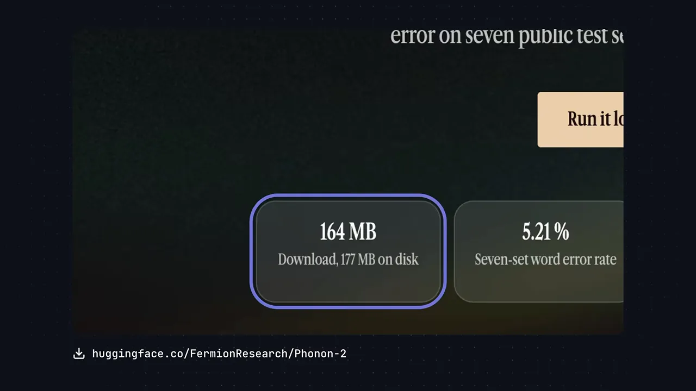
같은 원본, 다른 압축 방식
출발점은 Nvidia의 2.5GB 음성 인식 모델 Parakeet TDT(Token-and-Duration Transducer) 0.6B v3예요. 이 채널은 앞서 Moondream이 이 모델을 178MB로 줄인 Parakeet Redux를 다뤘어요. 아래 그림에서 위 칸이 원본이고, 아래로 두 갈래가 나뉘어요. 왼쪽 Redux는 가중치를 -1, 0, +1 세 값(ternary)으로 줄였어요. 오른쪽 Phonon-2는 'Encoder re-trained', 즉 인코더를 다시 학습시킨 쪽이에요.
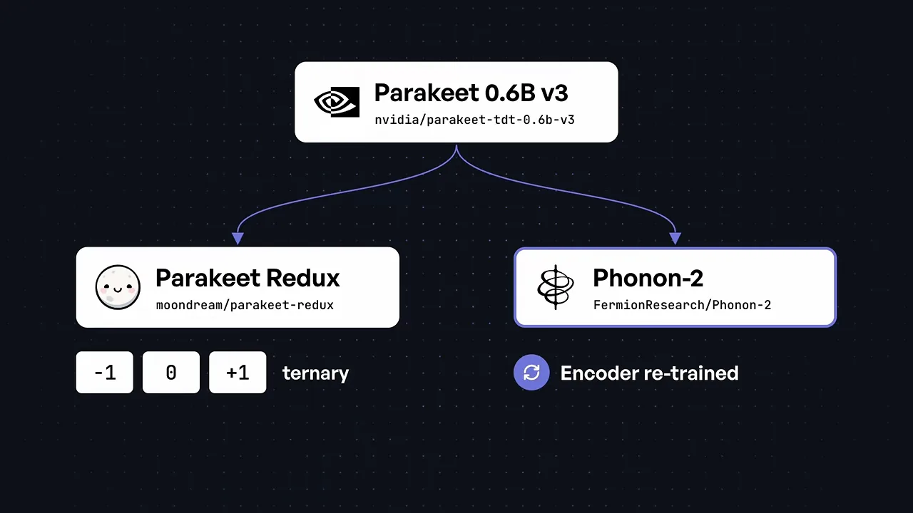
Phonon-2는 양자화를 더 공들여 했어요. 가중치 하나하나가 학습으로 정한 다섯 값 중 하나만 쓰게 했고, 이러면 가중치당 약 2.1비트가 돼요. 나머지는 6비트 표에 담았어요. Redux의 1.58비트보다 비트 수가 많아서 더 클 것 같지만, 다운로드는 164MB이고 풀면 약 178MB로 Redux와 같아요.
25개 언어 대 영어 하나
두 모델의 진짜 차이는 목표예요. 아래 그림 왼쪽 Redux 밑에는 bg, hr, cs 같은 언어 코드 25칸이 채워져 있어요. 오른쪽 Phonon-2 밑의 칸은 비어 있어요. Redux는 같은 용량을 25개 언어에 나눠 쓰고, Phonon-2는 영어 하나에 몰아 썼다는 뜻이에요.
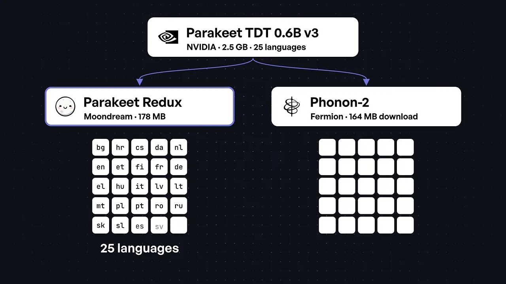
설치하고 돌려 보기, 174배 속도의 조건
설치는 간단해요. Python 3.10 이상이 필요한데 macOS 기본 Python은 3.9라서 새 가상 환경을 만들어요. 그다음 fermion-research 패키지를 MLX(Apple의 머신러닝 프레임워크 이름) 옵션과 함께 설치하고, 오디오 파일에 phonon transcribe를 실행해요.
아래 터미널은 처음 실행한 모습이에요. Hugging Face에서 'five-value' 프로필을 받는다는 줄에 '0.16 GB download, 0.18 GB unpacked'가 찍혀요. 'first run in a new environment compiles shaders (~20 s)'라는 줄도 있어요. 처음 한 번은 셰이더 컴파일에 20초쯤 걸리고, 그다음부터는 빠르다는 뜻이에요.
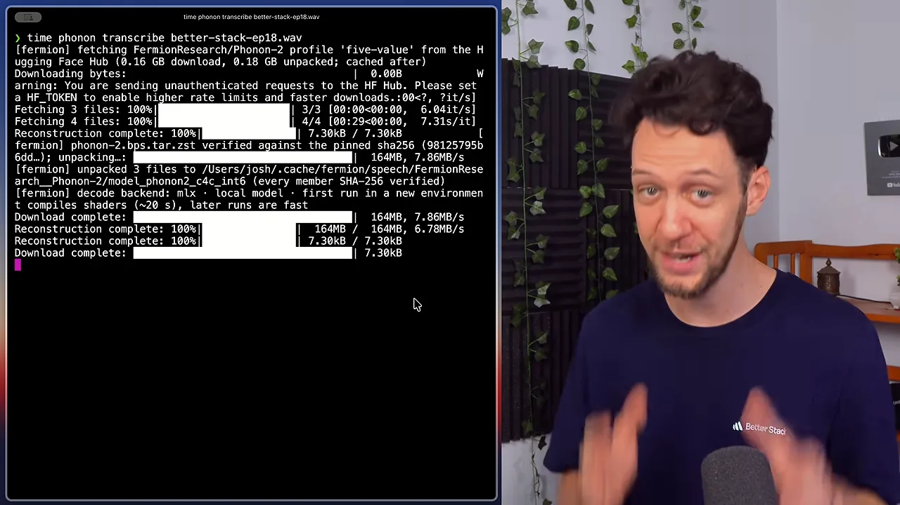
python3.12 -m venv .venv && source .venv/bin/activate
pip install "fermion-research[mlx]"
phonon transcribe better-stack-ep18.wavFermion은 16GB M5 MacBook Air에서 실시간 배속 174배가 나온다고 해요. 1시간 오디오를 약 21초에 받아 적는다는 뜻이에요. 모두 로컬에서 돌아서 클라우드에 올릴 일도, 분 단위 요금도 없어요.
174배는 fast path 기준이에요
Phonon-2는 MLX로 Mac GPU(Graphics Processing Unit)에서 돌고, 기본으로 켜진 fast path 디코더를 써요. 아래 슬라이드에 이 조건별 시간이 나란히 있어요. fast path 21초(174배), 정확한 디코딩(exact decode) 33초(109배), CPU만 쓰면 90초(40배)예요. 맨 아래 Whisper turbo 막대에는 whisper.cpp와 Metal 태그가 붙어 있어요.
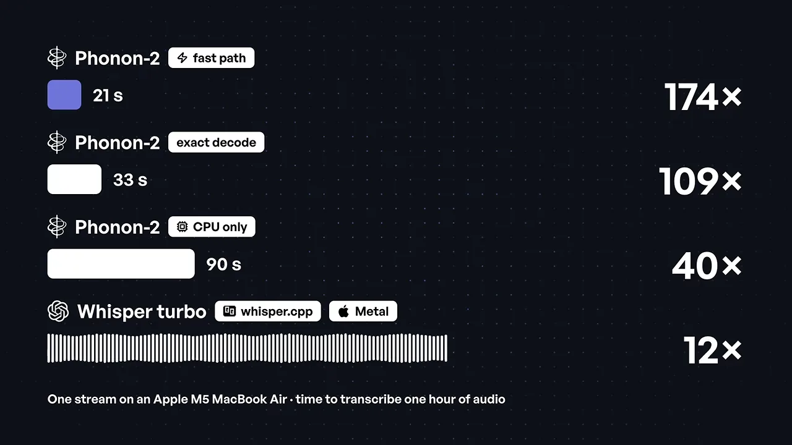
발표자는 Whisper Turbo가 17배라고 말하는데, 이 슬라이드에는 12배로 적혀 있어요. 바로 이어 나오는 Fermion의 원본 그래프를 보면 둘 다 있어요. whisper.cpp large-v3-turbo의 f16 버전이 17배, q5_0으로 양자화한 버전이 12배예요. 같은 그래프에서 FluidAudio로 돌린 Parakeet Redux는 28배, 원본 Parakeet은 105배로 찍혀 있어요. 이 두 숫자는 다음 섹션에서 다시 나와요.
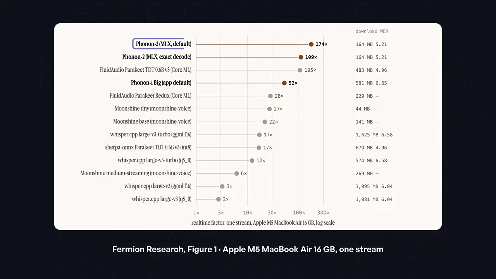
정확도와 벤치마크, 누가 쟀나요?
속도가 빨라도 받아 적은 게 틀리면 쓸 수 없어요. Fermion은 Phonon-2를 Redux, Whisper Turbo, 원본 Nvidia 모델과 단어 오류율로 비교했어요. 아래 막대에서 Phonon-2 5.21, Parakeet Redux 5.69, Whisper large v3 turbo 6.58이 차례로 늘어나요. 아래쪽 출처 줄에는 'Source: Fermion Research'라고 적혀 있어요.
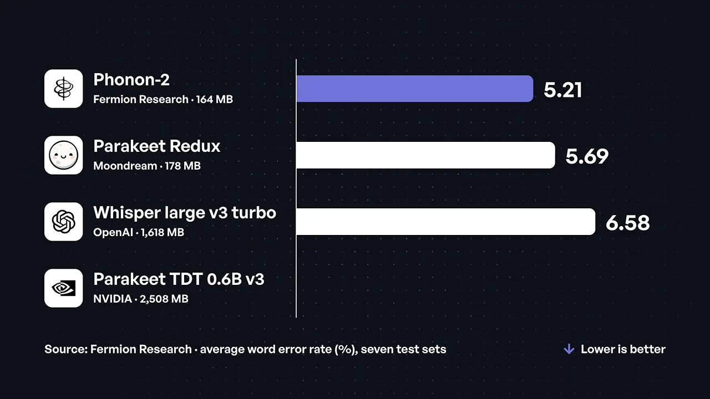
원본 2.5GB Nvidia 모델은 4.96이에요. 다운로드가 15배쯤 작은 모델이 원본과 약 0.25포인트 차이라는 거예요. Fermion은 Phonon-2를 '900MB 이하 공개 영어 음성 모델 중 가장 정확한 모델'이라고 불러요. 발표자는 여기서 두 가지를 물어요. 왜 하필 900MB인지, 그리고 이 벤치마크를 누가 돌렸는지요.
숫자를 낸 쪽이 Fermion이에요
지금까지 나온 숫자는 Redux 숫자까지 전부 Fermion이 쟀어요. Redux 모델 카드에는 평균 6.55라는 다른 숫자가 적혀 있어요. 그렇다고 어느 한쪽이 틀렸다는 뜻은 아니에요. 측정 방식이 달라서 두 모델 카드를 바로 비교할 수 없다는 뜻이에요.
Fermion 자기 결과에서도 Phonon-2가 다 이기지는 않아요. 아래 막대처럼 회의 녹음 벤치마크(AMI(Augmented Multi-party Interaction))에서는 Redux가 9.16으로 Phonon-2의 9.37보다 나아요.
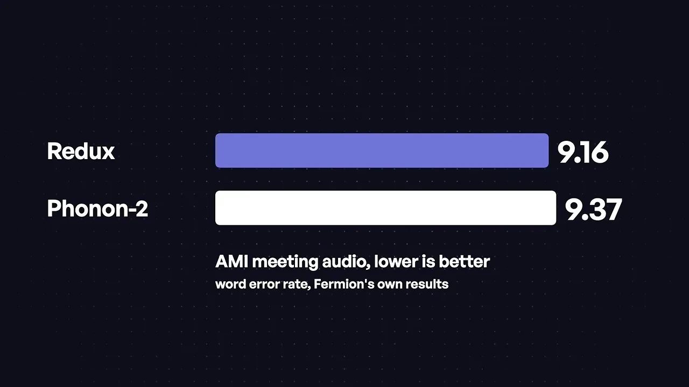
'6배 빠르다'는 비교가 수상한 이유
발표자가 비교 전체를 의심하게 된 건 속도 주장 때문이에요. Fermion은 Redux를 Moondream 자체 런타임으로 돌리지 않았어요. 아래 도식처럼 Redux(178MB)를 FluidAudio라는 서드파티 Core ML(Machine Learning) 포트에 넣었고, 결과는 27.8배였어요. 그 아래 줄에서 원본 Nvidia 모델(2.5GB)도 같은 FluidAudio 포트를 거쳐요.
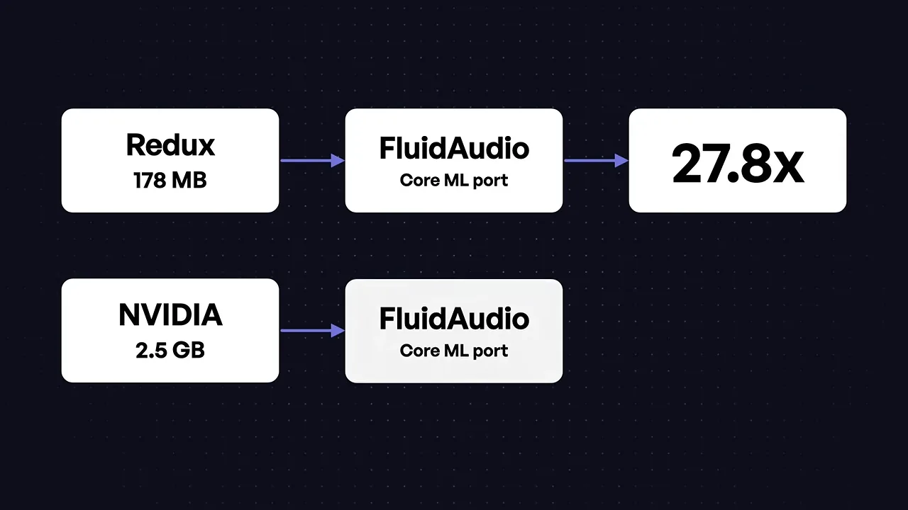
같은 표에서 그 원본 Nvidia 모델은 105배가 나왔어요. 14배 큰 모델이 4배 가까이 빠른 셈이에요. 그렇다면 Redux가 느린 게 아니라 포트가 성능을 깎고 있을 가능성이 커요. 아래 세 카드가 이 이야기를 정리해요. 왼쪽이 FluidAudio로 돌린 Redux 27.8배, 가운데가 Moondream이 자체 런타임으로 더 오래된 M2 MacBook Air에서 잰 38~43배, 오른쪽이 Phonon-2 fast path 174배예요.
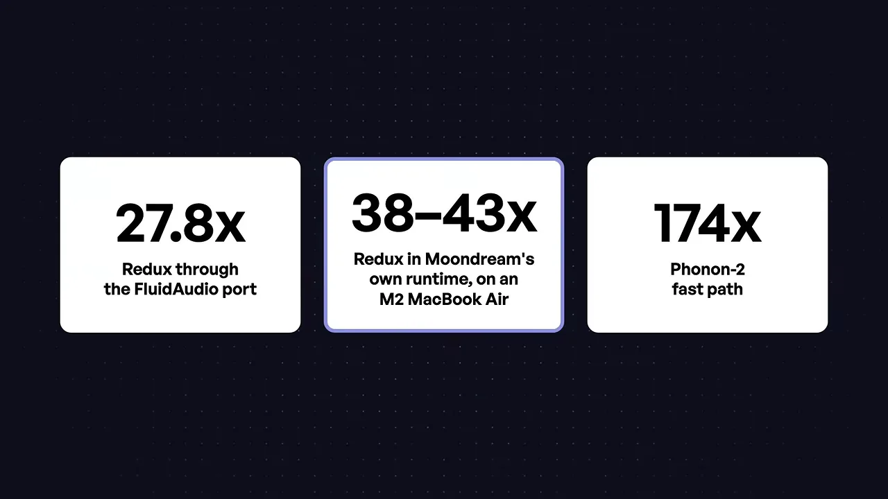
독립 리더보드에서는
제3자가 잰 숫자도 있어요. Open ASR Leaderboard 팀이 Phonon-2를 직접 테스트해서 10월 2일에 리더보드에 올렸어요. 아래 막대에서 Phonon-2는 7.23, 원본 Nvidia 모델은 6.51, Whisper turbo는 8.39예요.
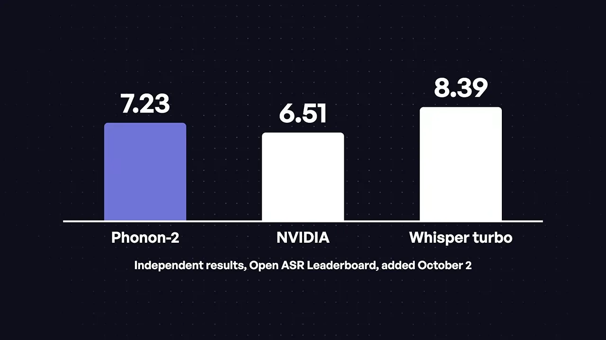
평균으로는 Phonon-2가 여전히 Whisper를 이겨요. 하지만 개별 테스트셋 세 개에서는 Whisper가 이겨요. 가장 큰 차이는 시끄러운 음성이에요. 아래 카드처럼 'URGENT 2024'에서 Whisper가 13.69, Phonon-2가 14.90이에요. 나머지 둘은 SPGISpeech와 Voice Arena 계열 테스트셋이라고 말해요.
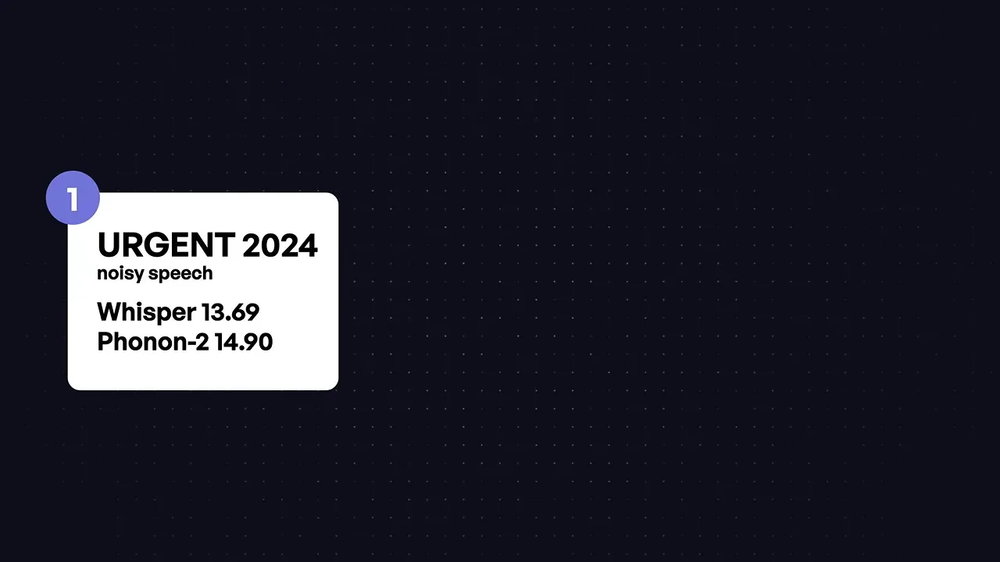
두 출처의 숫자를 한데 모으면 아래와 같아요. Redux는 리더보드에 아직 없어서, 가장 작은 두 모델을 독립적으로 맞붙인 결과는 없어요.
개발자에게 쓸모 있는 기능 세 가지
벤치마크와 별개로, 발표자는 개발자에게 쓸모 있는 기능 세 가지를 직접 보여 줘요.
마이크로 실시간 받아쓰기
phonon listen을 실행하면 마이크 소리를 바로 받아 적어요. 아래 터미널에는 'listening — speak; Ctrl-C stops and prints the transcript' 안내가 뜨고, 발표자가 말한 'Here I am just talking on my microphone, running a test.'가 그대로 찍혀요.
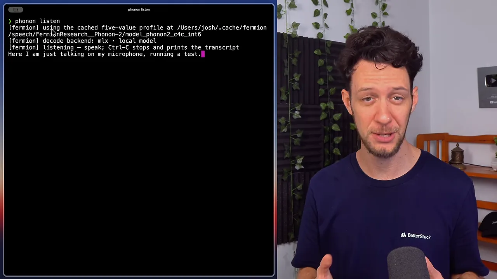
핫워드로 이름과 용어 잡기
발표자가 가장 마음에 들어 하는 기능이에요. 사람 이름이나 특정 단어 목록을 넘기면 그 단어를 더 잘 알아들어요. 기술 대화처럼 같은 용어가 계속 나오는 녹음에 특히 좋아요. 아래 화면 위쪽은 핫워드 없이, 아래쪽은 --hotwords "verified, latency"를 붙여 같은 파일을 받아 적은 결과예요. 이 데모에서는 두 줄이 똑같이 나왔어요.
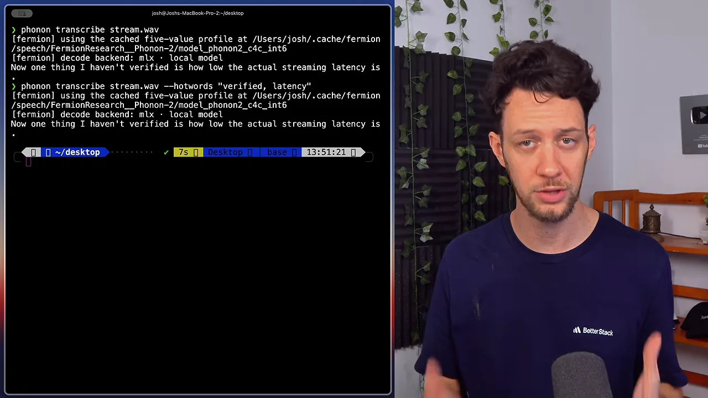
그 문장 내용처럼, 발표자는 실제 스트리밍 지연이 얼마나 짧은지는 확인하지 못했다고 해요. 바탕 모델은 오프라인 모델이에요. 실시간 받아쓰기에 기대는 서비스를 만든다면 지연부터 재 보라고 권해요.
OpenAI 호환 로컬 서버
발표자가 가장 쓸모 있다고 보는 기능이에요. phonon serve를 실행하면 8000번 포트에 서버가 떠요. 아래 출력에서 두 엔드포인트를 찾을 수 있어요. 파일을 보내는 POST /v1/audio/transcriptions는 'the Whisper API shape, so existing OpenAI clients work unmodified'라고 적혀 있어요. 실시간용 GET /v1/audio/stream은 웹소켓이에요. 맨 아래 줄은 chat/completions 엔드포인트는 열지 않는다고 알려요.
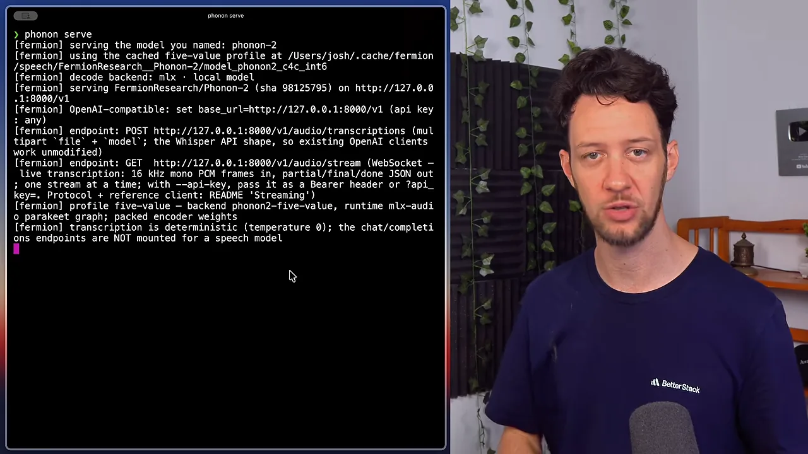
앱이 이미 OpenAI 받아쓰기 API를 쓰고 있다면 base URL(Uniform Resource Locator)만 localhost로 바꾸면 돼요. 익숙한 API 그대로 음성 인식을 로컬에서 돌리는 셈이에요. 아래는 curl로 파일을 보낸 결과예요. 받아 적은 문장이 {"text": ...} 형태의 JSON(JavaScript Object Notation)으로 돌아와요.
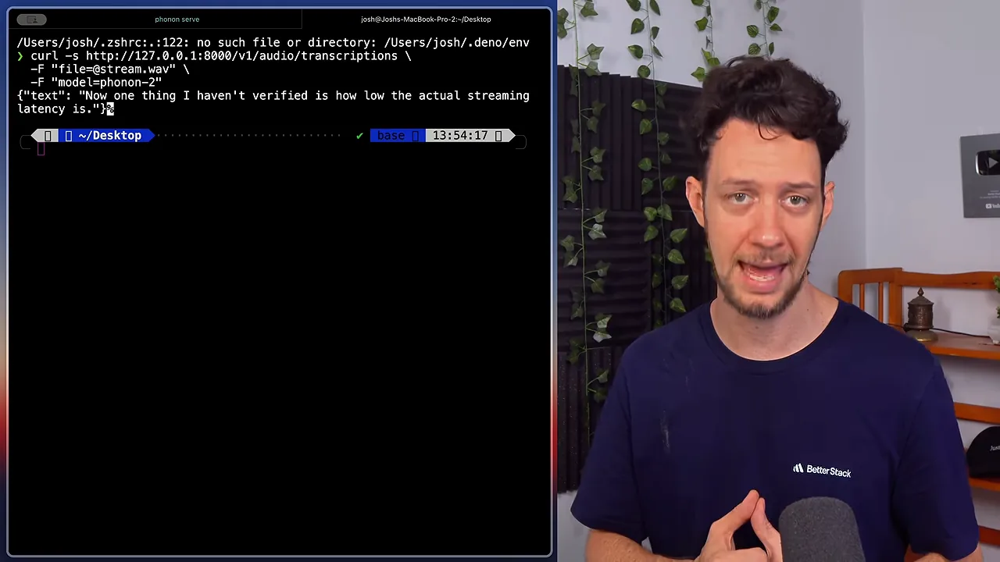
phonon serve
curl -s http://127.0.0.1:8000/v1/audio/transcriptions \
-F "file=@stream.wav" \
-F "model=phonon-2"세 기능을 한 표로 모으면 이래요.
| 명령 | 하는 일 | 영상에서 짚은 점 |
|---|---|---|
phonon listen | 마이크 소리를 바로 받아 적어요 | 스트리밍 지연은 확인하지 못했어요. 바탕 모델은 오프라인 모델이에요 |
--hotwords | 이름·용어 목록을 더 잘 알아듣게 해요 | 데모 문장에서는 결과가 달라지지 않았어요 |
phonon serve | 8000번 포트에 OpenAI 호환 받아쓰기 API와 웹소켓 스트림을 열어요 | base URL만 localhost로 바꾸면 기존 코드가 그대로 돌아가요 |
라이선스와 결론
작은 오픈소스 음성 모델이 쏟아지는 요즘, 발목을 잡는 건 대개 라이선스예요. Phonon-2는 간단한 편이에요. 아래 카드처럼 코드와 CLI는 Apache 2.0, 모델 가중치는 Nvidia에서 물려받은 CC BY 4.0이에요. 체크 표시 줄에 적힌 대로 Nvidia와 Fermion을 밝히면 상업적으로 써도 돼요.
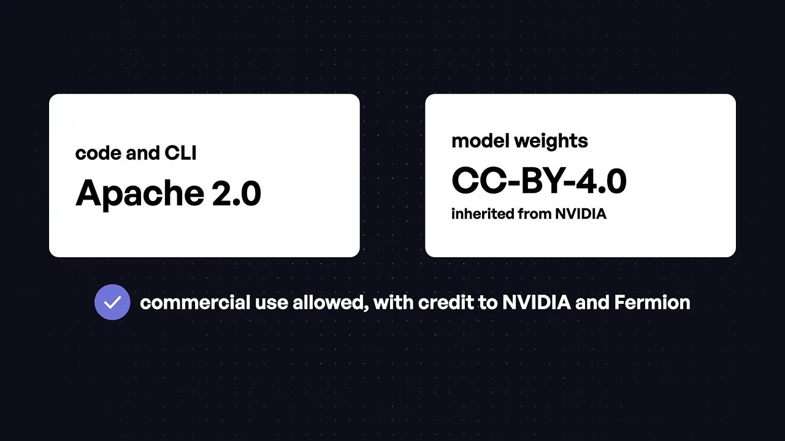
아직 6주 된 프로젝트예요
문제는 성숙도예요. 아래 카드에 프로젝트 상태가 숫자로 정리돼 있어요. 나온 지 약 6주, 출시 트윗 조회수 50만 회 이상, Hacker News 7점에 댓글 0개, GitHub 이슈 5개(모두 기능 요청)예요. 관심은 트윗에서 터졌지만 개발자 커뮤니티의 검증은 아직이에요. 실제로 쓰는 곳도 Fermion이 만든 Mac 받아쓰기 앱 Detta 정도예요.
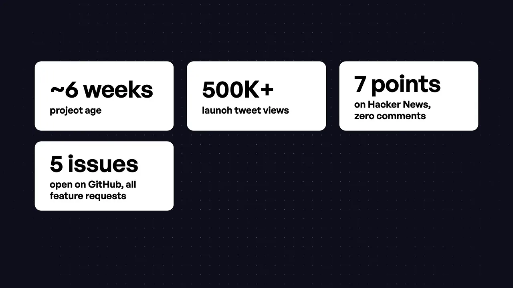
그래서 바꿔야 할까요?
Redux나 Whisper 대신 Phonon-2를 써야 하느냐는 질문에 발표자의 답은 '아마 아니요'예요. 지금은 바꾸지 말고 실험해 보라고 해요. 아래 마지막 슬라이드가 언제 무엇을 고를지 두 줄로 정리해요. Apple Silicon에서 영어 오디오를 다룬다면 Phonon-2(빠르고, 로컬이고, API가 있음)예요. 여러 사람이 겹쳐 말하는 회의 녹음이라면 Redux가 조금 앞섰어요(AMI 결과).
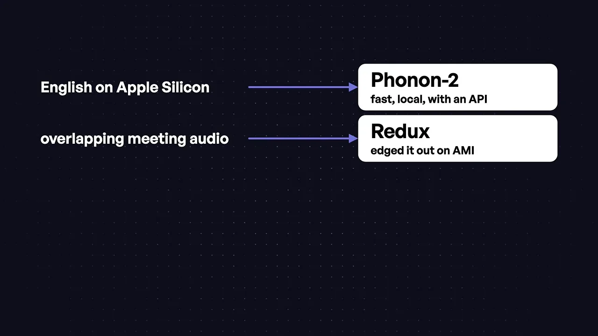
Don't change anything yet, just experiment with it.
아직 아무것도 바꾸지 말고, 그냥 실험해 보세요.
— 영상 08:54